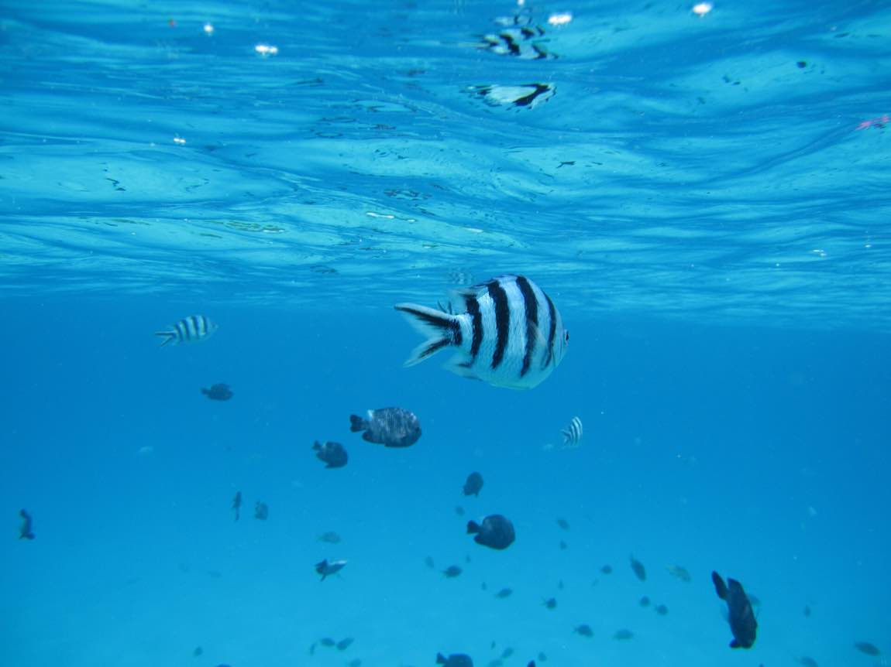
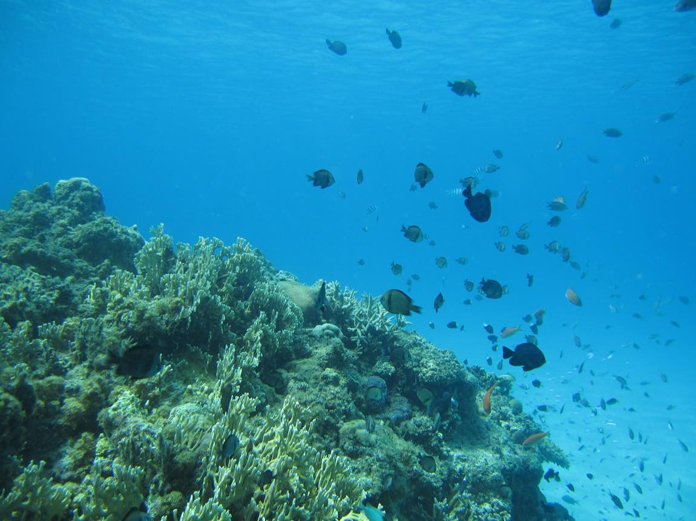
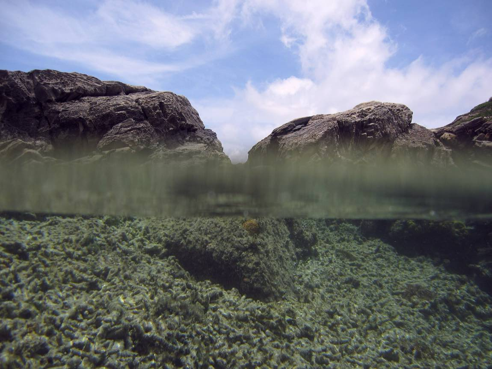
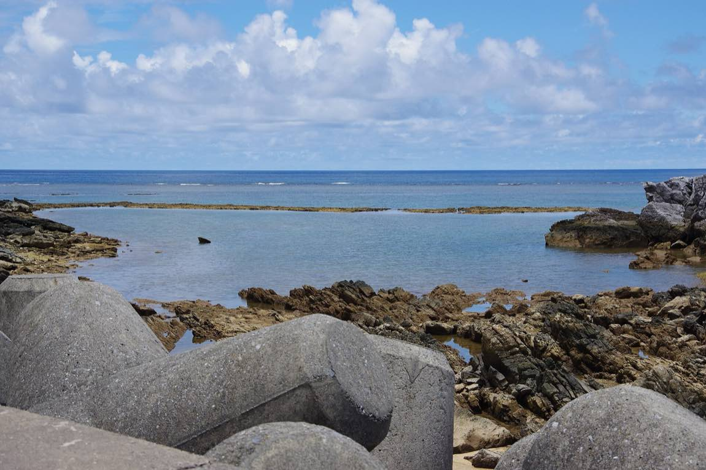
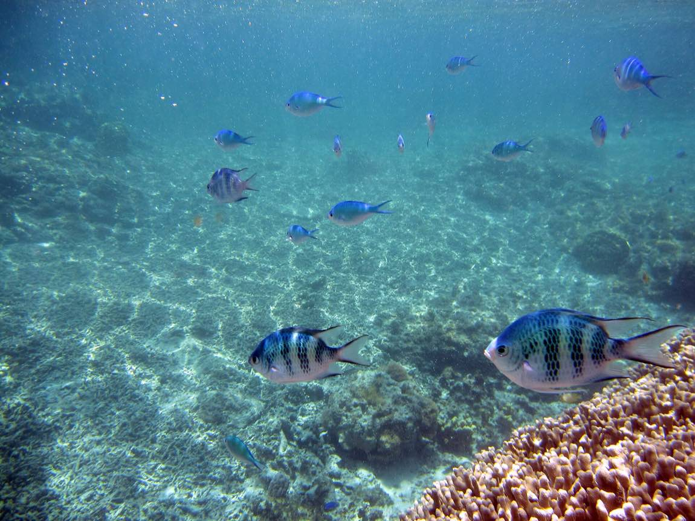
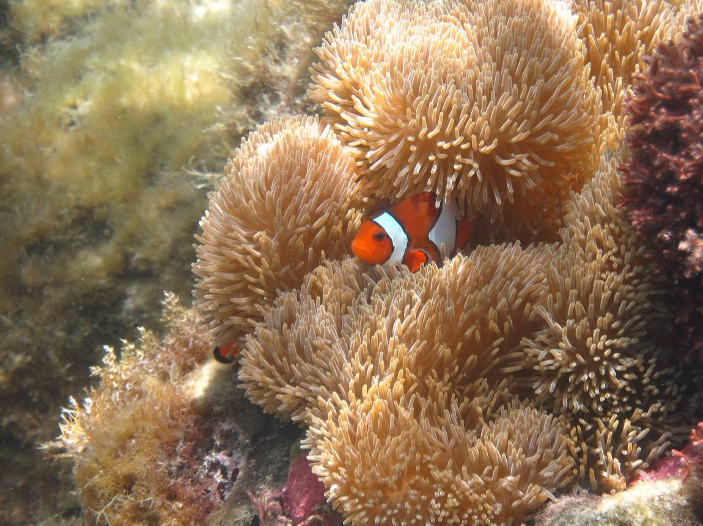
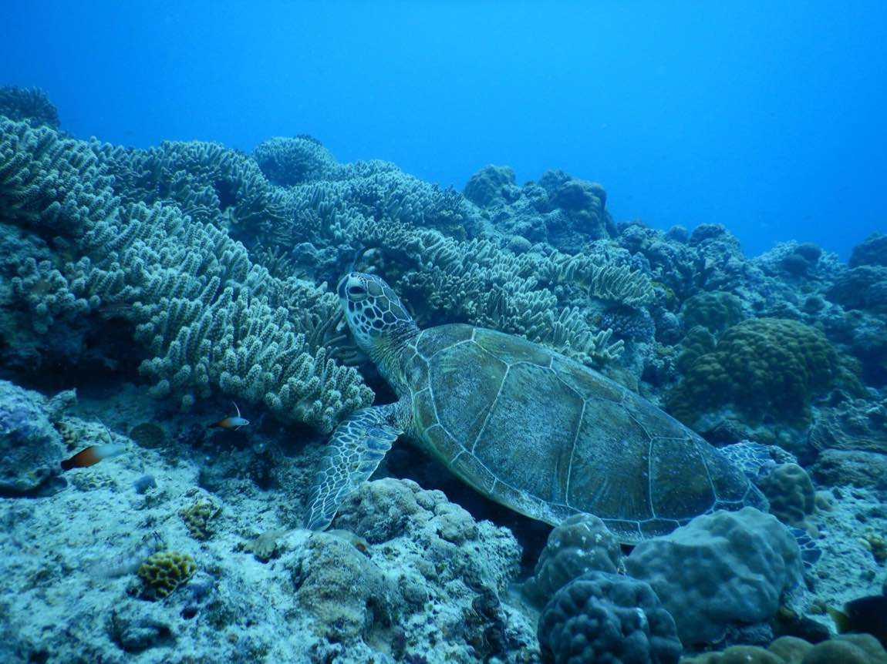
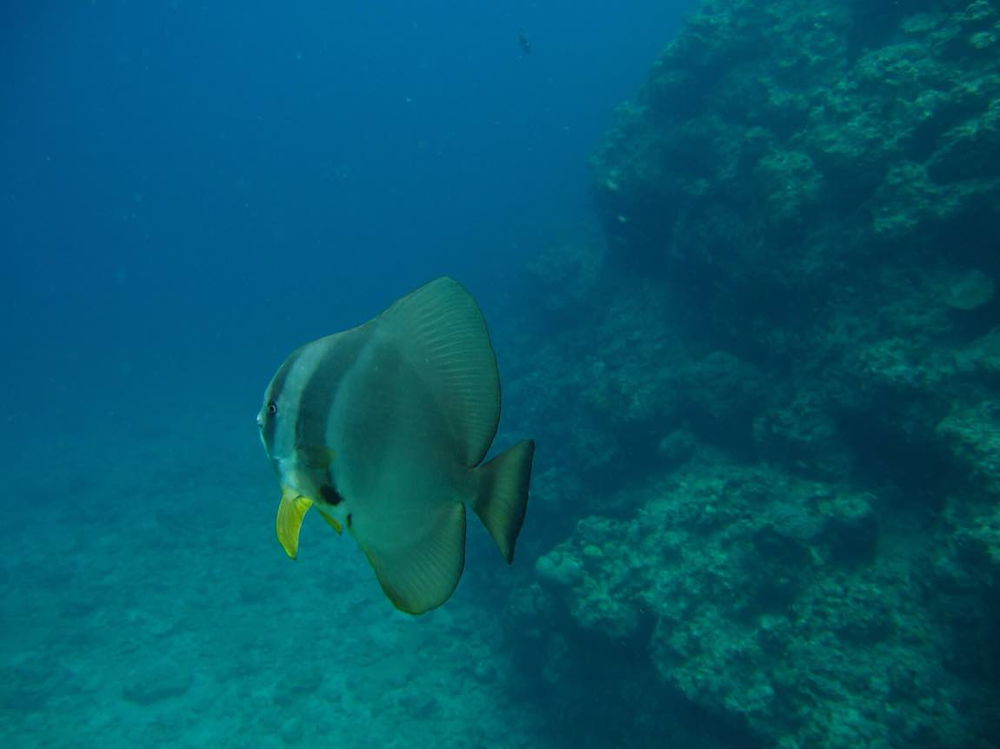

おきなわ
2026 9.7 → 9.10
F A M I L Y T R I P
2026年9月7日（月）— 9月10日（木）
3 泊 4 日
し ゅ っ ぱ つ ま で
い っ し ょ に い く 人
ルネッサンス リゾート オキナワ 恩納村・海の目の前。イルカがいるホテルです。
↓ ス ク ロ ー ル で 深 く 潜 る

こ の 海 に、9 月 に 行 き ま すこの2つさえ守れば、あとは流れで大丈夫です。
9月8日（火）朝 8:30 アクティビティカウンター。開くと同時に行く
やりたいこと全部を、ここで申し込みます。
9月9日（水）の 夜 翌朝6:30のヨガ、申し込めているか最終確認
ビーチヨガは前日までの申し込みが必要です。3泊するので今回は無料。 雨でもジムでやるので中止になりません。
那覇でお買いもの。暗くなる前にホテルへ
出かける前に家族みんなのTシャツのサイズをメモ。お店で早く終わります。
アクティビティの窓口は17時に閉まるので、この日は申し込めません。明日の朝いちばんに。

サ ン ゴ の 丘 と、魚 の 群 れおばあちゃんは青の洞窟へ。午後はイルカ
11:18 いちばん引く時間
明日ほどではありませんが、午前中に岩場が出てきます。 カニやヤドカリがいそうな岩場を見つけておくと、明日が楽しくなります。
久美さん・富美枝さん 酔い止め（出かける前に飲む）／水着／タオル／健康調査書
みんな 水着／マリンシューズ／日焼け止め／帽子／水あそび用オムツ
イルカのあとに 着替え一式（必ず濡れます）

潮 が 引 く と、こ の 岩 場 が 顔 を 出 すそして、最後の夜
11時から13時が、この旅のいちばんの見どころです。
12:04 4日間でいちばん引く
ふだんは海の中にある岩場が顔を出して、あちこちに潮だまりができます。 そこに小さなカニやヤドカリや魚が取り残されるので、2歳の鈴花でも見つけられます。
マリンシューズ（全員）／帽子／ラッシュガード／日焼け止め
小さなバケツかカップ（つかまえた生きものを見せられます）
食酢の小びん（万一クラゲに刺されたときの応急手当てに）

こ の 水 た ま り の 中 に、生 き も の が い る朝ヨガから始めて、海で締める
12:44 昨日と同じくらい引く
チェックアウトの前に、もう一度だけ岩場へ。
海から上がったあとの着替え一式を、スーツケースに入れずに手元へ
部屋を長く使えなかったとき用に、タオルと着替えを1つの袋にまとめておく

も う い ち ど、こ の 浅 瀬 へタップでチェックできます。この端末に保存されるので、閉じても消えません。
0 / 0
番号はタップでそのままかけられます。
県民広場地下駐車場（県庁前）
高さ制限 2.2m ／ 202台 ／ その日の上限 1,500円。国際通りの入口まで歩いて1分。
満車のときは「パレットくもじ地下駐車場」へ（高さ制限 2.1m）。
予約のパスワードは、このしおりには書いていません。

う ん が よ け れ ば、こ の 子 に 会 え るおきなわの うみに いる いきものたち
みつけたら おしてね。ひかったら、みつけた しるし。
いま 0 / 12 こ みつけた
いわの すきまや、みずたまりを のぞいてみてね。
さわるまえに、おとうさんか おかあさんに きいてね。

こ の 海 の、深 い と こ ろ9月8日（火）の午前 ／ 約80分

の ぞ く の は、こ ん な 世 界 で すこれは、まだ決まっていません。
ホテルの案内に「何歳まで参加できるか」「持病があっても大丈夫か」「泳げなくても参加できるか」 が書かれていませんでした。
9月8日の朝8時半に窓口で確認して、そこで決めます。 参加できないと言われたら、無理せず別の楽しみに変えます。 水中展望室から魚を見る「クマノミ号クルーズ」（濡れません）などがあります。
船で「青の洞窟」まで行って、海の中をのぞきます。港からは5分から7分ほど。
歩いて行くコースもあるのですが、100段以上の階段と岩場を歩きます。 船のコースならその階段を通らずに済むので、体には こちらの方が楽です。
泳げなくても大丈夫だと言われています。 ウェットスーツとライフジャケットで体は自然に浮き、案内の人が浮き具で引っぱってくれます。 （他の会社の案内で見た話です。ホテルのものも同じかは当日確認します）
9月10日（木）の朝6:30。ビーチで琉球ヨーガ。3泊するので無料です。
朝日を浴びながら、沖縄の音楽でゆっくり体を動かします。1時間ほど。 雨の日はジムでやるので中止になりません。
前の日までに申し込みが必要なので、こちらで済ませておきます。
6人でスコアを競う、かんたんなゲーム
タ ッ プ で ひ ら く 沖縄うみチャリ走 自己ベストが残って、家族のランキングが見られますタップでジャンプ ／ 長おしで高くとぶ ／ 空中でもう1回で2段ジャンプ
拾えるもの 魚肉ソーセージ／シークヮーサー／サーターアンダギー／シーサー
そうび むぎわら帽子／アロハシャツ／うきわ
ときどきイルカに乗れる区間があります。背景も走るほど変わります。 あさの砂浜、ほしぞら、スコール、さいごは にじの海。全部で10通り。
当日ホテルで聞いて決めることです。心配することではありません。
予定は変わってかまいません。天気や、子どもたちの機嫌で動きます。 ここに書いてあるのは「こうだと気持ちよく回れる」という目安です。
迷ったら、おひるねの時間だけは守る。
それだけで1日がうまくいきます。